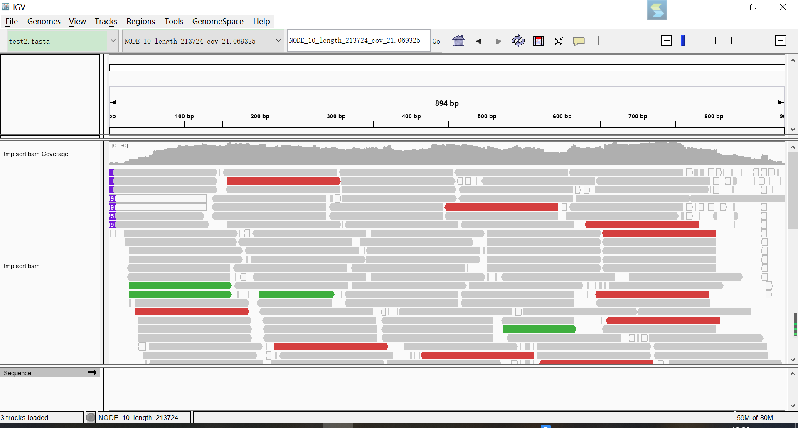
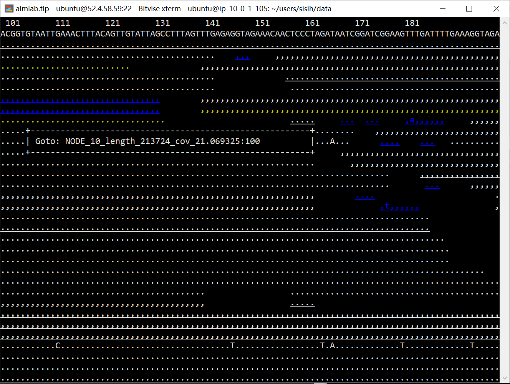

出发点：
1.对原序列一段区域感兴趣，将这一小段序列取出来保存为fasta文件作为reference
2.fastq文件align到reference，大部分是map不上的，只要map上的
3.比对结果可视化
用bowtie2进行align，用samtools去掉比对不上的
1 | bowtie2-build test2.fasta index |
主要是因为，我感兴趣的序列是原来assembly出来的fasta文件的很小一部分，所以比对上的比例是很小的，Bowtie2会把所有的reads都输出包括那些unmapped and redundant data，根据我的文件这些冗余数据占了99.97%. 而我想看的只是0.03%比对上的部分。
这个地方还可以有其它方法，在比对输出的时候就输出比对上的reads，可以看bbmap.
- 关于samtools
SAM(Sequence Alignment/Map) 格式是用于存储大核苷酸序列比对large nucleotide sequence alignments的通用格式。
- 具有足够的灵活性来存储由各种alignment programs生成的所有alignment信息；
- 足够简单，可以由alignment programs轻松生成或从现有alignment format转换而来；
- 文件尺寸紧凑；
- 大多数操作都可以 work on a stream ，而无需将整个文件加载到内存中；
- 允许通过基因组位置对文件进行索引，以有效地检索与位点对齐的所有读取。
SAM Tools提供了各种实用程序，用于处理SAM格式的比对，包括按位置格式排序，合并，建立索引和生成alignments in a per-position format.
比对结果+可视化
vcf文件
1 | # bcf->vcf |
在上面的命令行中，samtools收集输入的BAM中的摘要信息，计算给定每种可能基因型的数据的可能性，并以BCF格式存储可能性。It does not call variants.
Bcftools applies the prior and does the actual calling. 它还可以连接BCF文件，为快速随机访问索引BCF，并将BCF转换为VCF。 此外，bcftools可以在某些VCF上运行（例如，从带有GL标签的VCF调用SNP），但不能在所有VCF上使用； VCF到BCF的转换目前也不起作用。
更多见
http://samtools.sourceforge.net/mpileup.shtml
pileup文件
1 | # pileup格式文件 |
关于参数-Q和-q，在mpileup里-Q控制碱基的质量,-q控制比对的质量。也就是看到的pileup文件实际上是经过筛选的文件。
1 | samtools depth |& grep quality |
The pileup format有多种变体。 SAMtools的默认输出如下所示：
1 | seq1 272 T 24 ,.$.....,,.,.,...,,,.,..^+. <<<+;<<<<<<<<<<<=<;<;7<& |
其中每行由染色体chromosome，碱基坐标1-based coordinate，参考碱基reference base，覆盖该位点的reads数the number of reads covering the site，read碱基read bases和碱基质量base qualities组成。 在read碱基列上，点代表与正向链上的参考碱基匹配，逗号代表反向链上的匹配，ACGTN代表正向链上的mismatch，而acgtn代表与正链上的mismatch. 模式“ \ + [0-9] + [ACGTNacgtn] +”表示此参考位置和下一个参考位置之间有插入。 插入的长度由模式中的整数给出，后跟插入的序列。
更多见
http://samtools.sourceforge.net/pileup.shtml
IGV可视化
为bam文件建立索引，生成一个.bai文件，两者放入同一文件夹下，它根据文件名自动和.bam关联。
1 | samtools index tmp.sort.bam |
打开IGV，File->load from file将bam导入IGV中；Genomes->load from genome导入参考序列fasta文件。

samtools tview可视化
1 | samtools tview tmp.sort.bam test2.fasta |
.表示和参考序列一致，,表示比对到参考序列互补链，字母代表mismatch。颜色标注比对质量或碱基质量，30-40白色，20-30黄色，10-20绿色，0-10蓝色。
按?显示帮助菜单。
H(左）J（上）K（下）L（右）移动显示界面。大写字母移动快，小写字母移动慢。或者上下左右键。- 点号
.切换显示碱基和点号，r切换显示read name. g快速定位，如我们定位到NODE_10_length_213724_cov_21.069325:100位置，按下enter就可以到达该位置。q退出。
